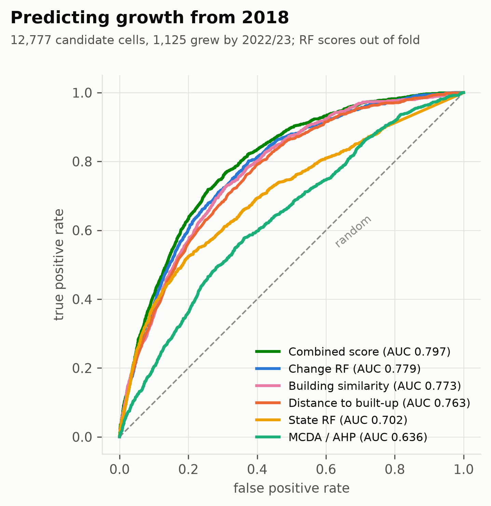

GIS term project · 582 km² · 100 m grid
Where should Bengaluru South build next?
A land suitability map built in Python from open land cover, terrain and OpenStreetMap data. Each method was scored with 2018 data alone, then checked against the land that was actually built on by 2022 and 2023.
Use it
Two ways in
Find places like A
Click any building or plot. The tool lists the usable land whose surroundings are most alike (land cover nearby, roads, water, built-up density, terrain) and explains each match.
Explore the full map
Every layer in one map: land cover, the three-class map, model scores, suitability classes and all 557 candidate patches, each with its area, slope and distances.
Result · final run, 2023 data
The 20 best candidate sites
Connected patches of S1 land of at least 5 ha, ranked by their mean suitability score. Select a row to show the site on the map above.
| Site | Area, ha | Score | Slope | To major road | To built-up | Cover now | Centre |
|---|---|---|---|---|---|---|---|
| Loading the 20 sites… | |||||||
Validation · 2018 → 2022/23
How well does it predict growth?
Every score was computed with 2018 data and tested on 12,777 cells that were not built-up in 2018. 1,125 of them were built on by 2022/23.
| Score | AUC, 0.5 to 1 | AUC | Lift |
|---|---|---|---|
| Combined suitability score | 0.797 | 3.45 | |
| Random forest on recent change | 0.779 | 3.23 | |
| Building similarity | 0.773 | 2.99 | |
| Distance to built-up land (baseline) | 0.763 | 3.04 | |
| Expert overlay (MCDA / AHP) | 0.636 | 1.86 | |
| Random (baseline) | 0.500 | 1.00 |
Lift: new building in the top 10 % of scores relative to a random 10 %. Growth next to existing built-up land is predicted well (AUC 0.82); growth far from it is not (0.51). The expert overlay scores below one of its own criteria, distance to built-up land, because its weights dilute that one strong signal.

Method
From land cover to a ranked map
Classify the land
K-means clustering of 100 m cells on land-cover shares and terrain gives built-up, forest and usable land, 96.6 % in agreement with the source map.
Describe the surroundings
Each cell gets 20 numbers about its surroundings: land cover within 250 and 500 m, distances to built-up land, roads and water, road density and terrain. The cell's own land cover is never used.
Learn from past building
Similarity to existing buildings and a random forest trained on growth from 2018 to 2021 are combined into one score, graded S1 (top 10 %), S2 and S3.
Test on later growth
Scores use 2018 data only and are checked on land built by 2022/23, with out-of-fold scoring in 2 km blocks and simple baselines alongside.
Read more
Report, slides and code
Data, methods, every validation result and the limitations, in full.